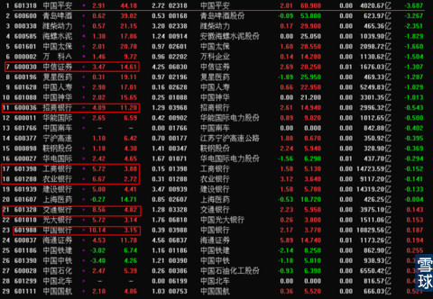
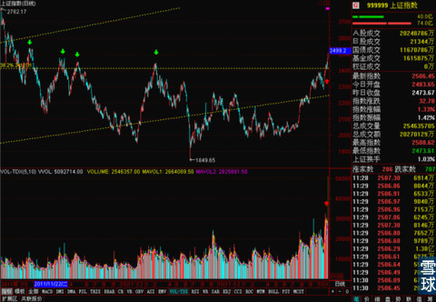
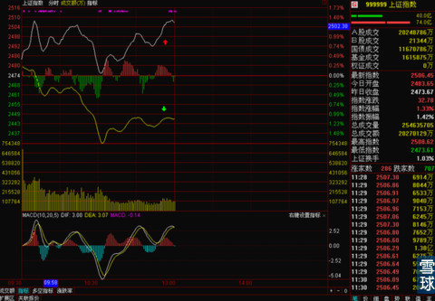

昨天像@枕水等小伙伴们问我港沪通落地之后是不是会出现一段时间的因为政策落地而出现的获利回吐期，这个我觉得有可能，但是时间不会很长，幅度可能比较暴躁，但是不会改变整个市场的上行趋势。
因为我们昨天刚刚得到准确消息说港沪通时间敲定了，大家都觉得有利好兑现要调整的可能，这边晚上马上报出来上交所再提T+0的事情，我之前就在别的答案里专门说过T+0，这个是大势所趋，一定会出来的，而且党报上半年还发文试探过市场反应，和港股对接之后一定是双方日趋同步的，大家觉得会是要求香港在交易制度上向我们同步，还是我们向香港同步？所以T+0是一定的。
但是为什么早不来晚不来，偏偏这个时候来，我猜一个是为港沪通预热制造气氛，一个是为了占据舆论有利位置。第一点好懂，但是第二点关键在于港沪通一来，双方参与者第一时间就会感受到我们这边T+1的不方便，会马上谴责这一制度，但是马上改还不行，准备工作和时机都没到，那么政府尤其是先表态，我们在做着腻，我们早就意识到了，这样比被大家谴责之后再出来被动表态压力就小多了，面子上也好看的多。之后还有深港通要上，人民币国际化的进一步迈进，国企改革深化，这些一连串的利好要来，市场一定是节节走高，外资也早就死死盯上A股了。所以现在即使港沪通来了大幅回调，也是闪电般下跌，快速清洗一大批摇摆态度者，随后就再次上攻。
而且昨天提出t+0这个事，今天市场直接利用消息拉抬超级权重掩护自己调仓换股的行为，同时借机直接把指数拉过比较难突破的前期成交密集区。

而且大家看一下今天这个成交量，有几个散户会这这种情况下疯狂的买入大盘蓝筹搞出这么大的成交量？几乎是不可能的，这些最终成交的买盘几乎都来自金融机构。所以后面的行情还是可以放心的。
有人一定会第一时间问我天量不是要见天价么？我只能告诉你，那是不对的。
请看下图，看好是什么情况下爆天量，什么时候见的天价。

所以说，不用因为现在的成交量惊慌，因为即使是2500点，对于中国股市来说是不可能称为天价的，同时天量不可怕，最可怕的连续大涨之后莫名其妙的高位缩量。

说回到今天的盘面，今天上证黄白线，分别代表权重股和小盘股的两条线分歧极为明显，如果下午这两条线的相背情况不能得到一定收窄，那么做超短线，尤其是追热门股的小伙伴们就小心一点吧。但是对于持有的是低价蓝筹的，基本不用理会，耐心持有就好了。
下午出现的情况上午有一定预感，因为这么大规模的调仓换股和权重与小盘的分歧，下午出现行情的反复也是正常，而且尾盘在大盘下跌了百分之一的情况下，又拉升了回来，收盘的时候基本回归到开盘价。后市短线可能不是很乐观。

需要观察一下明后天15分钟线BOLL收口之后再张开的过程中，中轨的方向性选择。
板块的上涨集中在极为少数的权重股上，让大多数投资者感觉有点不好。
但是目前还没有总体性行情结束的信号，所以中长线投资者可以多看少动，暂时不要急于卖出。
着急出去有点事，暂时就写这么多。明天写一下这种情况下的操作策略和整体思路。